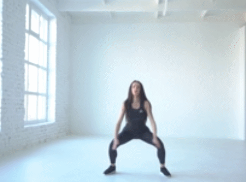

×

1. 하프버피
다리를 어깨너비보다 넓게 벌리고 서서 시작합니다.
무릎을 살짝 구부리고, 손을 가슴앞에 위치하세요.
그리고 상체를 숙이면서 손을 바닥에 대는 동시에
다리를 점프하여 플랭크 기본자세를 만듭니다.
그런 다음 다시 다리를 점프하여 손목 방향으로 당기고,
상체를 일으키면 1회가 완료됩니다. 1분간 반복하세요.
무릎을 살짝 구부리고, 손을 가슴앞에 위치하세요.
그리고 상체를 숙이면서 손을 바닥에 대는 동시에
다리를 점프하여 플랭크 기본자세를 만듭니다.
그런 다음 다시 다리를 점프하여 손목 방향으로 당기고,
상체를 일으키면 1회가 완료됩니다. 1분간 반복하세요.

2. 팔꿈치 플랭크 트위스트
매트에 팔뚝을 대고 엎드리는 팔꿈치 플랭크 자세로 시작합니다
그리고 엉덩이를 왼쪽으로 내렸다가 돌아오고, 오른쪽으로
내렸다가 돌아오면 1회가 완료됩니다. 1분동안 엉덩이를
좌우로 움직이면서 운동하세요 상체는 무너지지 않도록 균형을 유지합니다.
그리고 엉덩이를 왼쪽으로 내렸다가 돌아오고, 오른쪽으로
내렸다가 돌아오면 1회가 완료됩니다. 1분동안 엉덩이를
좌우로 움직이면서 운동하세요 상체는 무너지지 않도록 균형을 유지합니다.

3. 플랭크 잭
매트에 손을 대고 엎드리는 기본 자세로 시작하세요.
시선은 바닥을 향하고, 살짝 점프하여 다리를
벌렸다가 오므리는 동작을 계속 반복하세요
척추 중립을 유지하고, 1분동안 다리를 움직이면서 반복하세요.
팔꿈치와 무릎이 구부러지지 않도록 주의합니다.
시선은 바닥을 향하고, 살짝 점프하여 다리를
벌렸다가 오므리는 동작을 계속 반복하세요
척추 중립을 유지하고, 1분동안 다리를 움직이면서 반복하세요.
팔꿈치와 무릎이 구부러지지 않도록 주의합니다.

4. 사이드 플랭크 변형
손을 바닥에 대고 엎드리는 플랭크 자세에서 오른손으로
버티면서 왼팔을 공중으로 뻗는 사이드 플랭크 자세로
전환합니다. 그리고 원래 자세로 돌아온 다음
오른팔을 공중으로 뻗는 사이드 플랭크 자세를 만드세요
1분동안 사이드 플랭크 자세를 반복하세요.
버티면서 왼팔을 공중으로 뻗는 사이드 플랭크 자세로
전환합니다. 그리고 원래 자세로 돌아온 다음
오른팔을 공중으로 뻗는 사이드 플랭크 자세를 만드세요
1분동안 사이드 플랭크 자세를 반복하세요.

5. 점프스쿼트
다리를 어깨너비보다 넓게 벌린 상태에서 시작합니다.
그리고 무릎을 구부리고 엉덩이를 바닥으로 낮추면서
스쿼트를 진행합니다. 그런 다음 일어나면서 점프하여
손을 머리 위로 올리고, 손바닥을 붙입니다.
스쿼트 자세와 점프 자세를 반복하면서 1분간 운동하세요.
그리고 무릎을 구부리고 엉덩이를 바닥으로 낮추면서
스쿼트를 진행합니다. 그런 다음 일어나면서 점프하여
손을 머리 위로 올리고, 손바닥을 붙입니다.
스쿼트 자세와 점프 자세를 반복하면서 1분간 운동하세요.